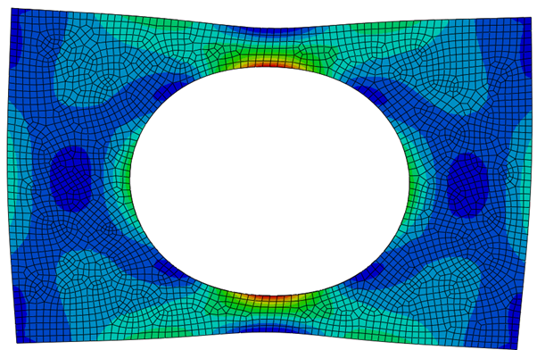

2024
Finite Element Analysis: Plate With Central Hole
Individual Abaqus CAE study of stress concentration and mesh convergence on a thin Inconel 718 plate under tensile loading, validated against theory.
Particulars

Placeholder image: replace with your Abaqus stress contour for the final mesh.
Context & Challenge
Stress concentrations around holes are a classic failure driver in lightweight structures. This project modelled a thin rectangular plate with a central hole under tensile loading and used mesh refinement to study how element count affects predicted peak stress, runtime, and confidence in results.
Objectives & KPIs
Model Setup
The plate was defined as 750 mm long, 500 mm wide, 2 mm thick, with a 375 mm diameter central hole. Material was Inconel 718 (E = 200 GPa, ν = 0.3, yield ≈ 1186 MPa).
Simplification and boundary conditions
To reduce compute time while keeping accuracy, a quarter model was used with symmetry boundary conditions on the midlines. Load was applied as pressure equivalent to the specified tensile force on the free face.
Image to follow.
Meshing strategy
Auto-meshing was kept consistent across all runs. Global mesh size was adjusted to hit target element ranges: 30–60, 160–300, 600–1200, 2500–6000, and approximately 9000 elements.
Image to follow.
Results: Mesh Convergence
Peak stress increased rapidly with early refinement, then plateaued around ~1000 elements. This indicated diminishing returns beyond the 600–1200 element range, while runtime started increasing after that.
- 46 elements → max stress 1.36×108 Pa (8 s)
- 230 elements → max stress 1.59×108 Pa (8 s)
- 982 elements → max stress 1.70×108 Pa (8 s)
- 4028 elements → max stress 1.72×108 Pa (10 s)
- 8890 elements → max stress 1.73×108 Pa (12 s)
Image to follow.
Validation Against Theory
Theoretical stress concentration calculations predicted a peak stress of approximately 1.79×108 Pa. The converged FEA result was slightly lower (~1.73×108 Pa), which is consistent with modelling and boundary simplifications.
Image to follow.
Higher Load Case
Using the optimal mesh (982 elements), the model was re-run at 85,000 N. The reported peak stress was 8.134×108 Pa. Displacement contours showed the highest deformation at the loaded edge, with a linear displacement trend across the model.
Image to follow.
Image to follow.
Image to follow.
What This Demonstrated
- Engineering judgement: stopping mesh refinement once results plateau, instead of chasing maximum element count.
- Verification mindset: checking simulation outputs against theory rather than trusting contours.
- Efficiency: quarter-symmetry model delivered comparable accuracy at lower compute cost.
Reflections & Improvements
Auto-meshing was fast and consistent, but manual refinement around the hole would likely improve local accuracy without a large increase in overall element count. A 2D simplification could further reduce runtime for thin structures, provided the assumptions match the physics and boundary conditions.
Image to follow.